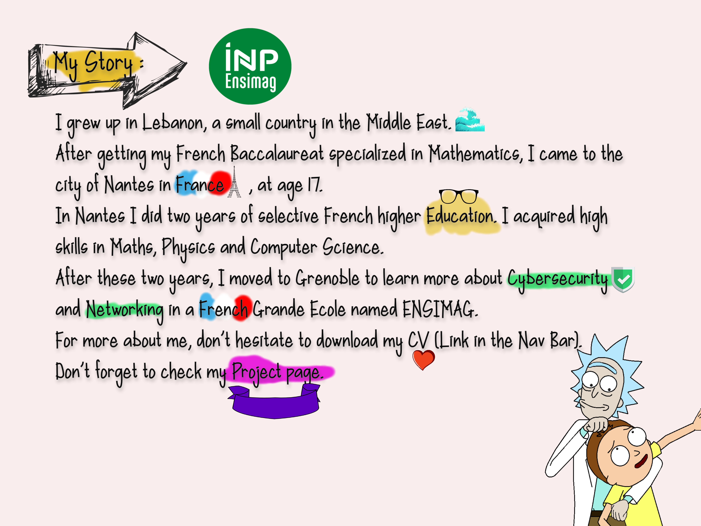
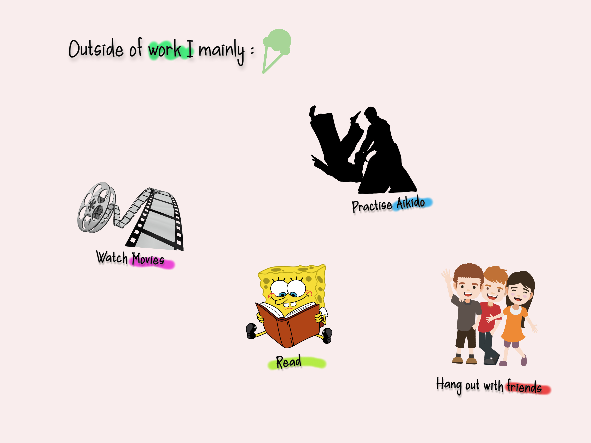
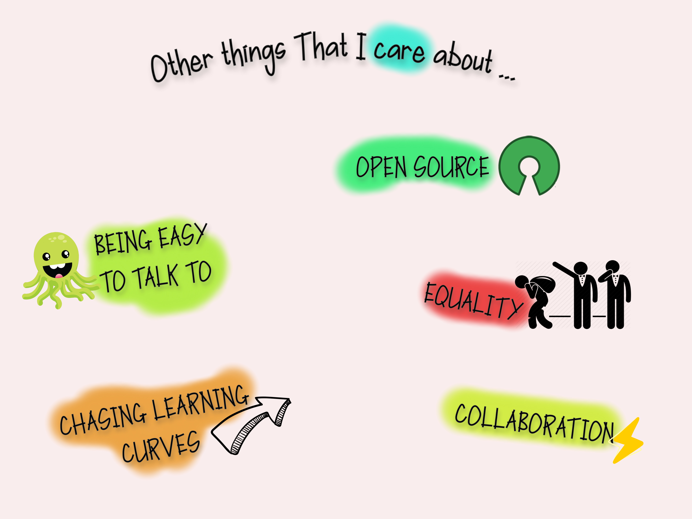
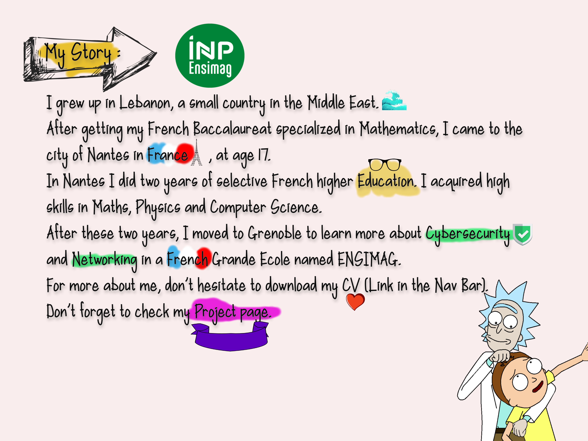
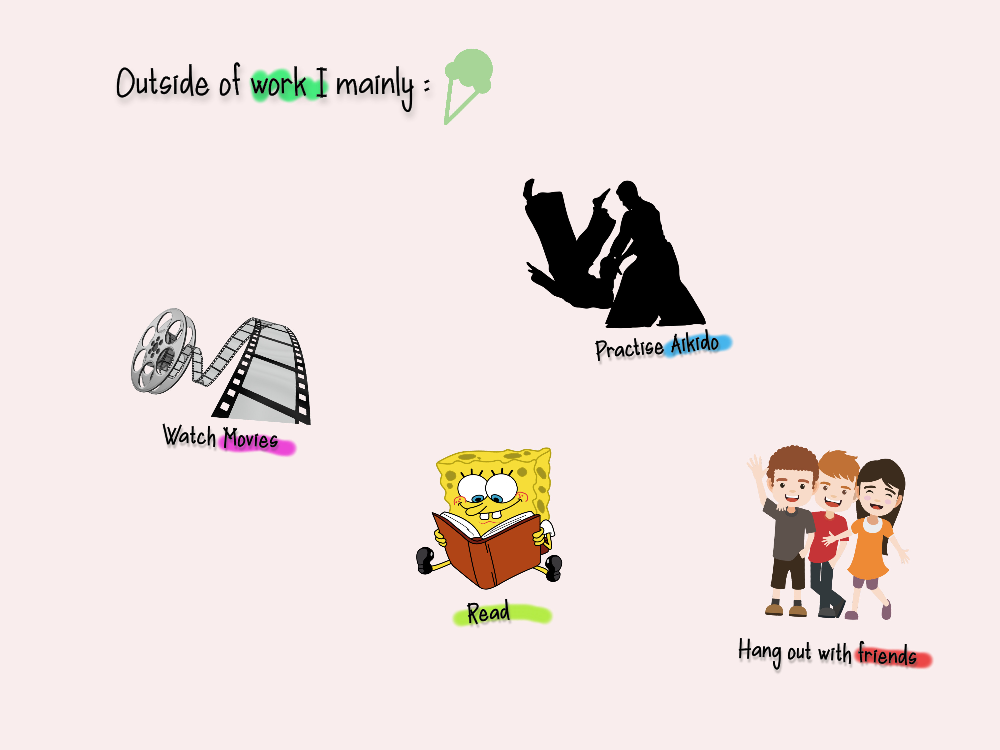
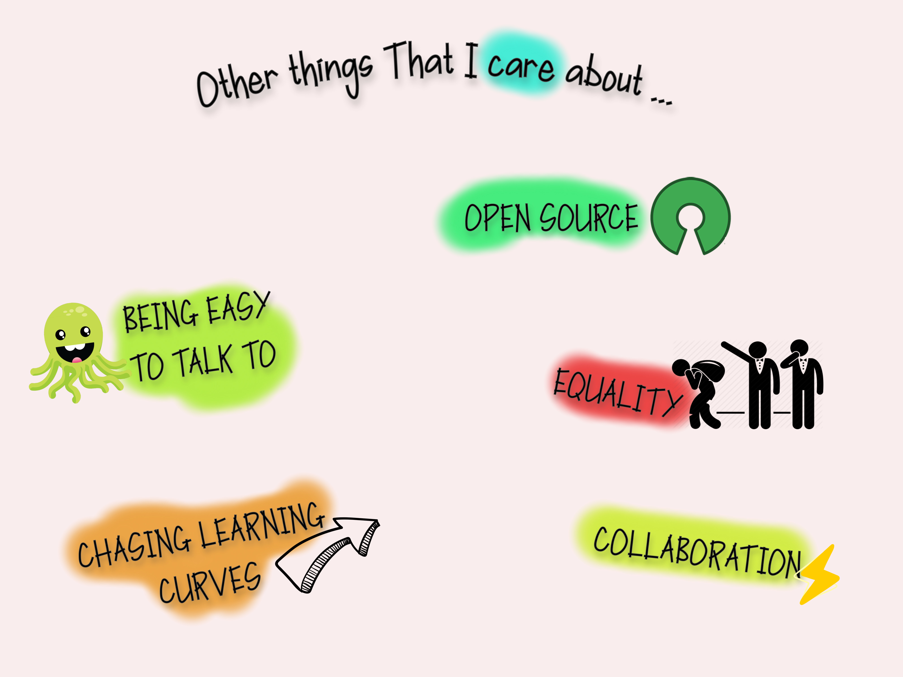

Hi, I am Haroun, this is my website where I keep all of my thoughts and links to everything I do on the internet.
 





Recently Published
March 2022
Wireshark sometimes hides the truth
Wireshark is the best tool to capture traffic (after tcpdump of course) on a network. However the traffic show by wireshark is not always the real one circulating physically. In this article we will see how Wireshark hides the escaping mechanism on HDLC-like protocols and we show a way to actually see the real frame.
January 2021
Fastest way to connect points
Given a number of points in a plane and a distance d, we seek the most optimal way to connect the points located at a distance at most d. The final goal is to calculate the size of strongly connected components.